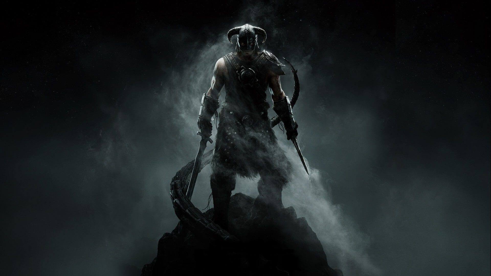

Sangre de Dragon

"Aquellos que desean convertirse en emperador y encender el fuego de dragón son sin duda Sangre de Dragón. La prueba está en que llevan el amuleto y encienden los fuegos. ¿Pero es que eran Sangre de Dragón y eso les permitió hacer esas cosas, o el hacerlas fue la señal de la bendición de Akatosh que descendía sobre ellos? Todo lo que podemos decir es que se trata de ambas cosas, y de ninguna... Un misterio divino."